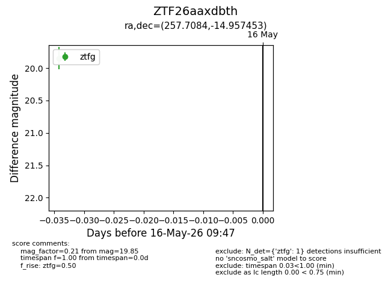
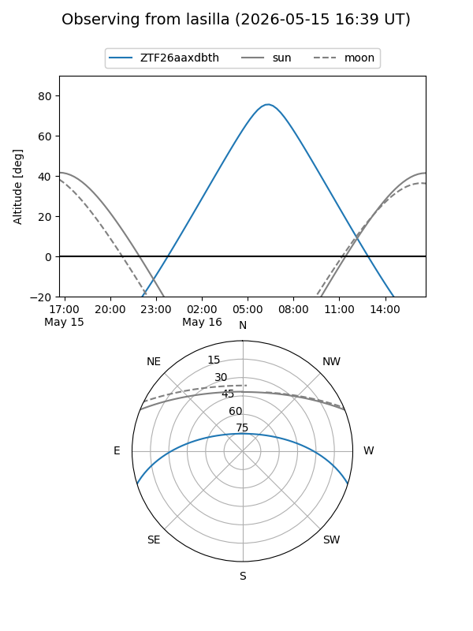
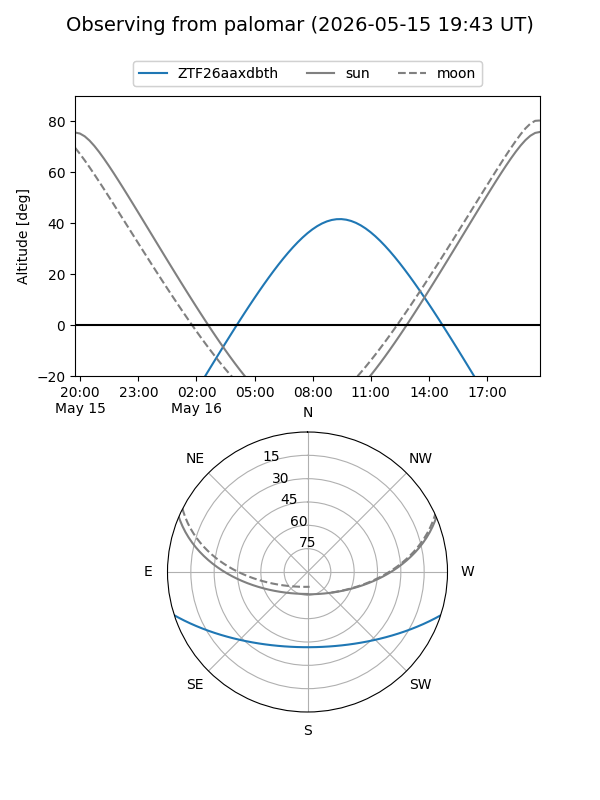

ZTF26aaxdbth
Target ZTF26aaxdbth at 2026-05-16 09:49
Aliases and brokers:
FINK: link
Lasair: link
ALeRCE: link
alt names
ZTF26aaxdbth (ztf,fink_ztf)
Coordinates:
equatorial (ra, dec) = 257.7084,-14.95745
equatorial (HMS+DMS) = 17:10:50.01,-14:57:26.83
galactic (l, b) = (7.4419,+14.34411)
Flags:
Photometry:
last ztfg=19.85
1 ztfg detections
Lightcurve

Visibility


Additional plots